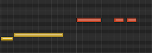

All structure is comprised of either the new, repetition, or repetition with variation.
This applies at every scale (i.e. zoomed in or zoomed out). Musical structures also often have recursive / nested / fractal-like repetitive structures.
Structures for much of music are often in groups of 2, 3 or 4. Greater than this, and audiences will increasingly find it hard to keep track of the structure.
In Practical Terms
When creating any unit of music, all options come down to one of three:
Create something new; or
Repeat something; or
Repeat something with variation
Illustrated, given:
A
The only possible following options are:
Add something new (aka different)

A then B
or Repeat
A then A
or Repeat with variation
A then Variation of A
The same principle can then be applied to the structure as a whole:
(A then B) followed by Variation of (A then B)
or to fragments of the structure:
(A then B) followed by Variations of B
Variations of a musical idea can be viewed as spatial transforms on a pattern of notes / shape, akin to image editing (moving a shape, stretching / compressing, flipping, deforming etc), or can be tonal (variations in sound / timbre).
More Info
Recursion
Musical structures often have recursive / nested / fractal-like repetitive structures. Example:
Repetition of melodic units at different pitches
Zoomed out, the entire line itself is also repeated:
Repetition of the greater structure
Groupings
Structures are commonly in groups of 2, 3 or 4.
Owing to human capacity to group and remember things, 3 is a popular perceived grouping / structure found in many disciplines (verse-bridge-chorus, 3 act story-structure, rule of thirds, speechwriting...)
Using structures built on groups of 2, 3, 4 parts is a common "safe" structure, that is more easily recognisable. Greater than this, and audiences will increasingly find it hard to keep track of the structure.
The New v Repetition
Any unit of (musical) information A can only be succeeded by B, repetition of A or a variation of A.
(This principle is particularly useful to keep in mind when "stuck what to do next")
This is true at every scale (i.e. zoomed in or out): within a rhythm, to phrases forming a melody, to distinct larger section of music.
The new and repetition are opposing forces:
the more new material, the more interesting but less memorable it becomes. Conversely,
the more repetition, the more memorable but less interesting it becomes.
At the extremes, each becomes self defeating. Repetition with variation is a middle ground on this spectrum.